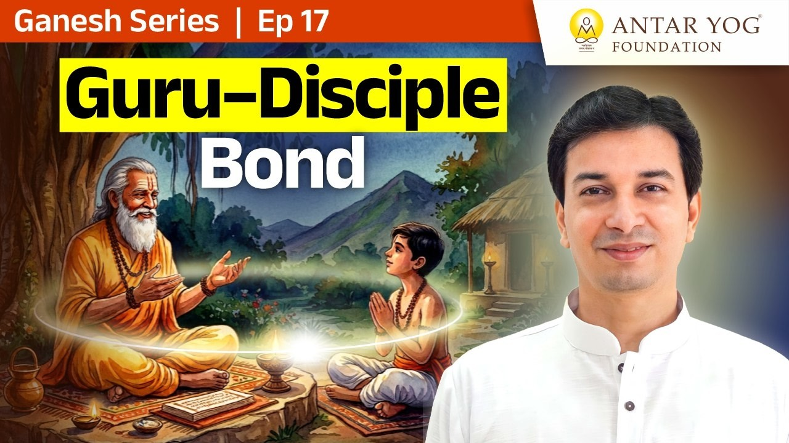

हम में से बहुत लोग मान लेते हैं कि गुरु मिल गए, तो अब सब वही संभाल लेंगे। कर्म भी वही लेंगे, शक्ति भी वही देंगे, और जीवन की हर इच्छा भी वही पूरी करेंगे।
पर क्या सचमुच ऐसा है? इस प्रवचन में गुरु और शिष्य के रिश्ते को एक बहुत सरल और सीधे उदाहरण से समझाया गया है: माता-पिता और संतान का रिश्ता।
गुरु मार्गदर्शक हैं, बैसाखी नहीं
गुरु मार्गदर्शक (guide) हैं। शिष्य के कर्म लेना उनका कर्तव्य नहीं है। वे उतना ही लेते हैं, जितना पिछले जन्म का ऋणानुबंध (कर्म का बंधन, karmic bond) है।
जब उन्हें लगता है कि आप सुपात्र (योग्य पात्र) हो, तभी वे आपका कुछ लेते हैं। यह कृपा है, कोई अनुबंध नहीं।
"शक्तिपात भी देना उसका काम नहीं है। वो तुम्हारे अंदर की शक्ति है।"
शक्तिपात यानी गुरु द्वारा शिष्य में आध्यात्मिक ऊर्जा का संचार। पर गुरु पर इसकी कोई बाध्यता नहीं। वह शक्ति तो आपके भीतर ही है। इसीलिए गुरु कहते हैं, "साधना करो।"
नब्बे साल के पिता और सत्तर साल का बेटा
माता-पिता बच्चे को पालते हैं, कमाकर खिलाते हैं। बहुत अच्छा। पर कब तक?
अगर आप नब्बे वर्ष के हो गए और बेटा सत्तर या पैंसठ का, तो क्या तब भी आप ही उसके लिए कमाते रहोगे? हर माता-पिता चाहते हैं कि बच्चे में शक्ति आए, वह स्वयं कमाए, और बुढ़ापे में सहारा बने।
तो यही बात गुरु और शिष्य पर क्यों लागू न हो?
"यह कितनी बार शक्तिपात? तू शक्तिवान क्यों नहीं बनता है खुद?"
एक बार सिखाया, शिविर में दो बार सिखाया। दो साधनाएं कीं, चार कीं। फिर भी पच्चीस साल बाद वही प्रार्थना: "गुरुदेव, मुझे गाड़ी, घोड़ा, बंगला दो।" क्या यह चलेगा?
जिसे यह बात समझ आ गई, उसे बुद्धि आ गई।
क्या मैं अपनी साधना से बढ़ रहा हूं, या अब भी केवल मांग रहा हूं?
विवेक: असली भेद किसका है?
बुद्धि के बाद आती है विवेक बुद्धि। विवेक यानी भेद करना (discrimination)। पर यह काले-गोरे, ऊंच-नीच या चार वर्णों का भेद नहीं है।
यह भेद है आत्मा और अनात्मा का। मन, बुद्धि, अहंकार, ये सब जड़ (inert) हैं। आत्मा चेतन (conscious) है।
एक सरल प्रयोग सोचिए। किसी ने आप पर चिल्लाया। तो चिल्लाया किसने, उसके शरीर ने या उसके भीतर की किसी अदृश्य चीज ने? और गाली किसको दी, आपके शरीर को, आपके मन को, या आपको, यानी आत्मा को?
अगली बार कोई आप पर नाराज़ हो, तो पूछिए: चोट किसे लगी, मुझे या मेरे मन को?
अनात्मा यानी जो आत्मा नहीं है। यह भेद जिसे करना आ गया, उसके पास विवेक बुद्धि है। और जिसे इस विवेक में आनंद आता है, उसका नाम है विवेकानंद।
विवेक बुद्धि के देवता हैं गणपति। यह बहुत ऊंची अवस्था है।
पहले सूक्ष्म बुद्धि
विवेक से पहले सूक्ष्म बुद्धि आनी चाहिए, यानी यह समझ कि क्या महत्वपूर्ण है। मुझे गुरु को कितना कष्ट देना चाहिए और कितना नहीं?
मेरा काम है जागरूक रहकर यज्ञ, दान और तप को नित्य कर्म बनाना, वह भी शास्त्रोक्त विधि से।
यज्ञदानतपःकर्म न त्याज्यं कार्यमेव तत्।
(श्रीमद्भगवद्गीता १८.५)
यज्ञ, दान और तप त्यागने योग्य नहीं हैं, इन्हें करना ही चाहिए।
इसके बाद मेरा कर्म, ज्ञान, स्मृति और अपोहन (विस्मृति, भुला देना), यह गुरु के हाथ में होता है।
मत्तः स्मृतिर्ज्ञानमपोहनं च।
(श्रीमद्भगवद्गीता १५.१५)
स्मृति, ज्ञान और अपोहन, सब मुझसे ही होते हैं।
गुरु परमेश्वर से ऊपर क्यों?
परमेश्वर भी लेने की इच्छा नहीं रखता। गुरु को भी लेने की इच्छा नहीं होती, फिर भी वे लेते हैं।
इसीलिए हर धर्म में गुरु का स्थान परमेश्वर से ऊपर कहा गया है, क्योंकि वे ले सकते हैं।
चौंसठ साल का बेटा और मां का अभिमान
कितनी मांएं अभिमान से कहती हैं, "मैं अपने बेटे का सब करती हूं। चौंसठ साल का है, फिर भी खाना मैं बनाकर देती हूं, पैसे भी मैं ही देती हूं। वह निकम्मा है, कुछ काम नहीं करता।"
क्या यह कथन किसी मां को सच में अच्छा लगेगा?
पंद्रह, सोलह, अठारह साल तक सहारा देना ठीक है। पर उसमें भी धीरे-धीरे एक-एक चीज कम होनी चाहिए। धन भी एक शक्ति है। अगर वह भी सदा आप ही देते रहें, तो आपके जाने के बाद उसकी क्या हालत होगी?
"उतनी विवेक बुद्धि गुरु में भी होनी चाहिए कि मुझे शिष्य को कैसा बनाना है।"
जब दोनों में गणपति जागें
गुरु में यह विवेक हो कि शिष्य को कैसा बनाना है। और शिष्य में यह समझ हो कि मुझे कहां तक निर्भर (dependent) रहना है।
जब दोनों की यह स्थिति हो जाए, तो समझिए दोनों में गणपति जागृत हो गए।
ऐसी कथाएं गणेश पुराण में हैं, और गणेश गीता भी उसी के अंतर्गत आती है। यह प्रवचन उसी गणेश गीता का सार है।
हजार बार अथर्वशीर्ष, पर क्यों?
गणेश अथर्वशीर्ष हजार बार क्यों? किसी काल्पनिक चीज का नाम हजार बार रटने से कोई लाभ नहीं।
तो हजार नाम क्यों? किसी दूसरे की मदद के लिए? वहीं उत्तर दिया गया है: यहां दूसरा कोई है ही नहीं।
मैं जप करता हूं, तो किसके लिए, और किसे खोजते हुए?
मुख्य बातें
- गुरु मार्गदर्शक हैं; कर्म लेना या शक्तिपात देना उनकी बाध्यता नहीं।
- असली शक्ति आपके भीतर है, और उसे जगाने का मार्ग साधना है।
- जैसे माता-पिता चाहते हैं कि बच्चा आत्मनिर्भर बने, वैसे ही गुरु चाहते हैं कि शिष्य शक्तिवान बने।
- विवेक बुद्धि यानी आत्मा और अनात्मा का भेद; इसके देवता गणपति हैं।
- यज्ञ, दान और तप शास्त्रोक्त विधि से नित्य कर्म होने चाहिए।
- जब गुरु में सही विवेक और शिष्य में सही समझ हो, तब दोनों में गणपति जागते हैं।
